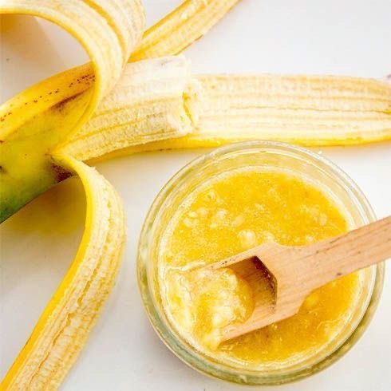

Beauty advice
уход за кожей и волосами в домашних условиях
⇐ на главную
Face masks
❤ Кожа – очень чувствительный орган, и конечно же при неправильном уходе за ней могут возникать различные проблемы. У каждого человека кожа абсолютно разная: склонная к сухости, в жирности, комбинированная, с высыпаниями и без, чувствительна к разным компонентам.
❤ Приготавливая маску самостоятельно можно всегда иметь уверенность в качестве, в отсутствии лишних продуктов в составе, и в том, что она прекрасно подойдёт именно под ваши особенности кожи.
❤ Обратите внимание, что перед применением маски нужно обязательно сделать "тест" на маленьком участке кожи на отсутствие аллергической реакции.
❤ Перед нанесением маски необходимо очистить кожу от декоративной косметики и грязи, которая могла оказаться на лице после насыщенного дня. Нужно очистить кожу специальным средством, которое подходит конкретно для вашей кожи, а после рекомендуем сделать скраб для лица. Так полезные вещества лучше воздействуют на кожу.

❤ Общие правила для нанесения маски в домашних условиях:
› маску нужно готовить непосредственно перед применением, чтоб все полезные компоненты оставались свежими и приносили исключительно положительный эффект.
› волосы желательно собрать, чтоб не мешали нанесению маски на лицо, а кожу предварительно распарить.
› во время нанесения не стоит затрагивать кожу вокруг глаз.
› маска на лице должна быть около 15-20 минут.
› после процедуры нужно аккуратно смыть маску тёплой водой, а лишнюю влагу убрать бумажным полотенцем.
Ингредиенты:
❤ активированный уголь - 2 таблетки
❤ желатин - 5 гр.
❤ молоко - 5 мл.
Таблетки активированного угля необходимо растолочь в порошок, смешайте с желатином и молоком. После полученную массу нужно поставить в микроволновку или на водяную баню, чтоб желатин растворился - маска готова. Нанесите на Т-зону, подождите и снимите маску плёнкой.
P.S. При нанесении избегайте попадания маски на зону бровей.
Ингредиенты:
❤ натуральный йогурт без добавок - 15 гр.
❤ куркума - 15 гр.
❤ жидкий мёд - 15 гр.
Все, что нужно сделать для получения маск, это перемешать все компоненты до однородной консистенции. Благодаря йогурту кожа станет более подтянутая, мёд поможет с увлажнением, а куркума - верный помощник в борьбе с пигментацией.
Ингредиенты:
❤ яичный белок - 1 шт.
❤ лимонный сок - 5 мл.
❤ жидкий мёд - 15 гр.
Рецепт максимально прост, однако польза от этой маски колоссальная. Нужно всего лишь белок, мёд и лимонный сок соединить вместе. Маска отлично подтянет кожу и поможет сузить поры. Кроме того, такую маску можно делать регулярно без вреда для кожи.
Ингредиенты:
❤ авокадо - 1/2 часть
❤ овсяные отруби - 30 гр.
❤ жидкий мёд - 15 гр.
Сперва требуется тщательно растолочь мякоть авокадо. В полученную массу добавить мёд и отруби, хорошо перемешать. Нанеся готовую маску можно немного помассировать кожу лица. Благодаря своим компонентам это принесёт лишь пользу.
Ингредиенты:
❤ оливковое масло - 30 гр.
❤ сухие цветы ромашки - 15 гр.
Изначально нужно цветы ромашки залить кипячёной водой и дать настояться в течение получаса. После воду необходимо слить, а ромашку смешать вместе с маслом. Наносите на кожу лица, избегая зоны вокруг глаз, а после смойте маску теплой водой.
Ингредиенты:
❤ жидкий мёд - 15 гр.
❤ сливки - 15 гр.
❤ сметана - 15 гр.
Все компоненты нужно перемешать между собой - и маска готова. Мёд отлично увлажнит и успокоит кожу, а также поможет справиться с воспалениями и мелкими морщинами. Сливки и сметана помогут коже стать более эластичной и подтянутой.
Ингредиенты:
❤ cпелый банан - 1 шт.
❤ яичный желток - 1 шт.
❤ сметана - 30 гр.
Целый банан необходимо превратить в банановое пюре. Далее нужно соединить пюрешку из банана вместе со сметаной и яичным желтком и хорошо перемешать. Полезные свойства банана известны всем: кожа станет более напитанной и получит здоровое сияние.
Ингредиенты:
❤ огурец - 1 шт.
❤ оливковое масло - 10 гр.
❤ натуральный йогурт без добавок - 15 гр.
Сперва необходимо натереть огурец на мелкой тёрке. Полученную массу смешать с йогуртом и маслом. Нанести на кожу лица и после смыть теплой водой.
Ингредиенты:
❤ листья зеленого чая - 15 гр.
❤ дрожжи - 15 гр.
❤ лимонный сок- 5 мл.
Дрожжи нужно смешать с чайными листьями и залить небольшим количеством кипятка. Спустя 20 минут в данный состав добавляем лимонный сок и маска готова к использованию. Такая маска отлично тонизирует, освежает цвет лица, слегка стягивает поры и избавляет от лишней сальности. Более того, зеленый чай чудесно борется с воспалениями.
Про маски для лица
Очищающая маска с активированным углём
Маска для выравнивания тона лица

Маска с яичным белком против расширенных пор
Увлажняющая маска с авокадо
Увлажняющая маска с маслом для очень сухой кожи

Увлажняющая маска с мёдом
Увлажняющая маска с бананом
Тонизирующая маска с огурцом
Маска с зелёным чаем для жирной кожи
With love to you...